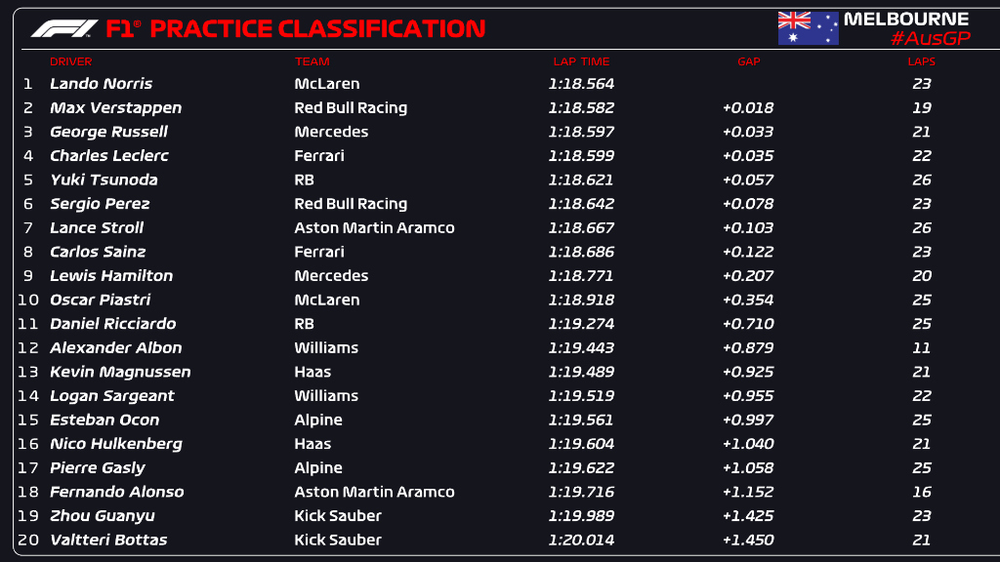
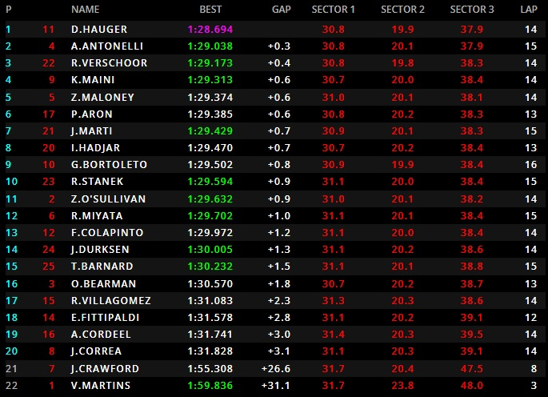
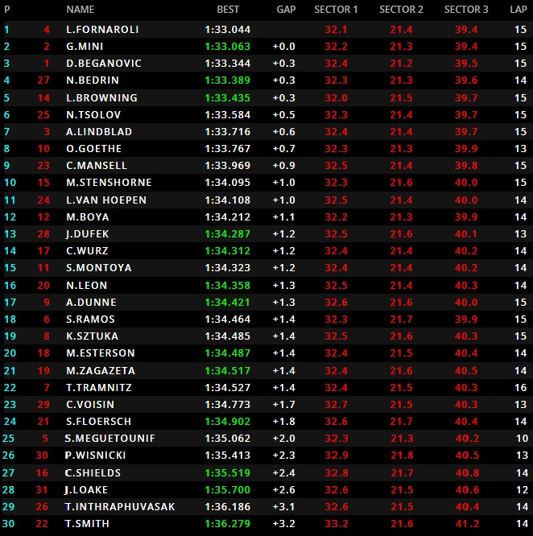

Día 1 del GP Australia
Día de excursiones a la grava en la que Albon es el más perjudicado ya que en el choque el chasis de su coche podría haber quedado irremplazable, teniendo que usar es de su compañero dejando a Williams con un solo coche, mientras Ferrari al mando de Leclerc da indicios de una lucha por la pole reñida.


Pole de Hauger en un último intento después de la bandera roja provocada por Crawford, Kimi Antonelli queda segundo mientras que Ollie Bearman queda 16 muy lejos entre compañeros. Pepe Martí a pesar de perder una vuelta lanzada, acaba 7 justo por delante de su compañero Hadjar.
Pole para Fornaroli con Mini segundo a 0.019 milésimas con Beganovic tercero y el español Boya en la 12 posición.
